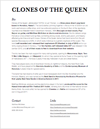

Clones of the Queen
From 2009 to 2013, we were a dream-pop trio from Honolulu, Hawaii.
We opened for The Cure! Yes, it was amazing!
We are no longer a band and are no longer performing or recording.
Ara Laylo on vocals, Paul Bajcar on guitars, Matthew McVickar on electronics.
Click here to download our three EPs for free!
All EPs streaming on Spotify or YouTube or Apple Music or right here:
Gate (2010)
Braided (2012)
Moonlight (2013)
Photos
 Photo by AJ Feducia
Photo by AJ Feducia Photo by AJ Feducia
Photo by AJ FeduciaAll photos are copyright their photographers, all rights reserved. Reuse is only permitted with permission—email us. Please do not use one of these photos for a flyer without asking the photographer first and crediting them.
About
COTQ Bio (PDF)
Clones of the Queen, abbreviated ‘COTQ’ or just ‘Clones’, is a three-piece synth-pop band based in Honolulu, Hawai’i. The band started jamming together in the summer of 2009 in an old bank vault above a coffee shop, and now write, practice, and record in the Crow’s Nest, a room on the fourth floor of the old Blaisdell Hotel in downtown Honolulu. With Ara Laylo on lead vocals, Paul Bajcar on guitar, and Matthew McVickar on drums and electronics, the trio delivers songs that are at once ambient and spirited, combining strong vocals, stormy percussion, and heavily-effected guitar lines and synth loops. Clones of the Queen derive their band name from the ant species Mycocepurus smithii, in which every individual is a genetic duplicate of the queen.
The unsigned band has self-released three EPs: Moonlight in September 2013, Braided in July 2012, and their fan-funded debut EP Gate in December 2010. All of their music is free to download from their website.
Clones of the Queen was honored with opening for The Cure at Blaisdell Arena in July 2013. Lead singer of The Cure Robert Smith himself choose Clones to open the show, and they played to the acclaim of fans new and old and got great reviews.
They have been featured on the popular music blog yvynyl. The trio has been the main support for many visiting bands, opening for Toro Y Moi, of Montreal, Menomena, Diplo, Little Dragon, and Warpaint, for whom they opened at Aloha Tower on the opening night of Hallowbaloo 2011, Honolulu’s yearly Halloween music and street festival.
They have played every one of downtown Honolulu’s nighttime hotspots, Waikiki’s Hard Rock Cafe, and the Honolulu Academy of Arts and the Contemporary Museum of Honolulu multiple times for special events.
The band has had dozens of write-ups in local newspapers (both the Star Advertiser and the Honolulu Weekly), and was named as the Best Band in Honolulu by the Boston Phoenix for their yearly Best New Bands in America feature in 2011.
For more information, promo requests, or to set up an interview, please email us.
Press
Moonlight EP
{kind=link}
Braided EP
{kind=link}
.jpg){kind=link}
.jpg){kind=link}
Print Archive
- 2014-08-06 • Paste Magazine: Nine Hawaii Bands You Should Listen to Now
- 2013-01-25 • Star Advertiser TGIF: Honolulu Museum of Art showcases musical mix
- 2013-01-24 • Honolulu Weekly: Secret’s Out
- 2013-01-01 • Oahu Inside Out: Musicians to jam at Doris Duke
- 2012-08-13 • Scene & Heard: Clones of the Queen Get ‘Braided’ (Honolulu Pulse)
- 2011-08-17 • Honolulu Weekly: COTQ Runner-up for Best Band in Honolulu
- 2011-08-05 • Honolulu Pulse: What to Expect at Hallowbaloo
- 2011-07-09 • Boston Phoenix: Best New Bands in America 2011
- 2011-05-18 • Honolulu Weekly: Red Rockets in Flight
- 2011-01-02 • Star Advertiser: Freewheeling indie bands…
- 2010-12-30 • Honolulu Pulse: 2011: Year of the Indie Band
- 2010-12-13 • Honolulu Pulse: Pics: Clones of the Queen EP Release
- 2010-12-10 • Honozooloo: COTQ Release Party
- 2010-12-10 • Honolulu Pulse: Pics: Clones of the Queen CD Release Party
- 2010-12-08 • Honolulu Weekly: Royalty Rock
- 2010-09-19 • Star Advertiser: Pics: ARTee at The Venue
- 2010-10-13 • Honolulu Weekly: Too Good
- 2010-09-22 • Honolulu Weekly: Social Lite
- 2010-09-10 • Honolulu Star Advertiser: Indie rock, local style
- 2010-08-01 • Contrast Magazine: Galaxy Rock
- 2010-07-20 • Star Advertiser: Pics: Indie Rock at Fresh Cafe
Blog Archive
- 2017-05-16 • AsAm News
- 2017-05-15 • Wear Your Voice
- 2013-12-30 • Dedicated Ears
- 2013-09-22 • Schuyler Tsuda
- 2013-09-20 • Gary Chun: The Hum
- 2013-09-15 • Ceejee’s Place
- 2013-07-31 • Rock Subculture
- 2012-12-26 • Radio Rimasto
- 2012-10-22 • Radio Rimasto
- 2012-10-19 • Dayvan Zombear
- 2012-09-11 • Inyourspeakers
- 2012-08-28 • Le blog de Grégory
- 2012-08-24 • Floorshime Zipper Boots
- 2012-08-22 • Art & Flea
- 2012-08-03 • Dedicated Ears
- 2012-08-03 • in4mation
- 2012-07-31 • Timbre Tantrums
- 2012-03-29 • Volume City
- 2011-11-17 • Honolulu Music
- 2011-09-10 • Rudified
- 2011-08-18 • Hipsters Eating Pineapples
- 2011-03-18 • FrostClick
- 2011-03-07 • Honozooloo
- 2011-03-04 • Contrast Magazine Blog
- 2011-03-03 • Timbre Tantrums
- 2011-01-15 • K Jacko
- 2011-01-08 • Theoretically Vinyl
- 2010-12-23 • in4mation
- 2010-12-20 • The Beat-Play Experiment
- 2010-12-10 • Honozooloo
- 2010-10-01 • Kim Boldrini Photography
- 2010-09-01 • yvynl
- 2009-12-08 • Contrast: Time Wasterz
- 2009-11-05 • Timbre Tantrums
Videos
- Clones of the Queen on YouTube (all songs streamable and practice recordings)
- search for ‘clones of the queen’ on YouTube (show recordings and fan videos)
- Fan-made short film for ‘Forest (Live at Loft)’ by Mikey Inouye